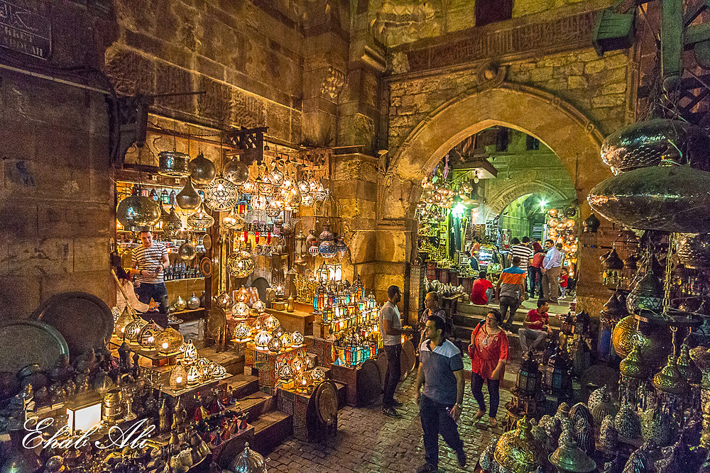

Theese are the most popular places in Egypt
- Khan El-Khalili
- Pyramids

The Giza pyramid complex (Arabic: مجمع أهرامات الجيزة), also called the Giza necropolis, is the site on the Giza Plateau in Greater Cairo, Egypt that includes the Great Pyramid of Giza, the Pyramid of Khafre, and the Pyramid of Menkaure, along with their associated pyramid complexes and the Great Sphinx of Giza.

Khan el-Khalili (Arabic: خان الخليلي) is a famous bazaar and souq (or souk) in the historic center of Cairo, Egypt. Established as a center of trade in the Mamluk era and named for one of its several historic caravanserais,